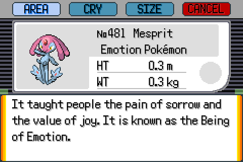
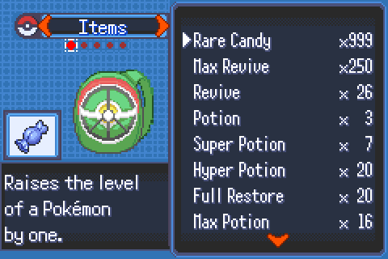
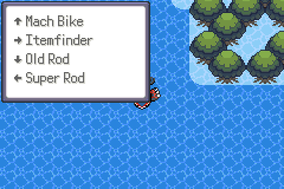
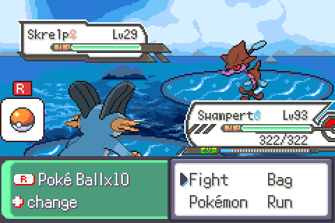
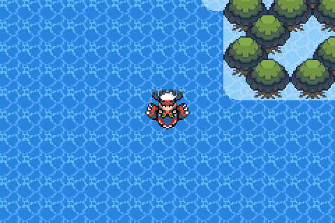
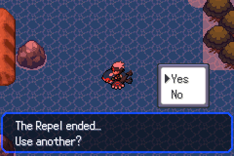
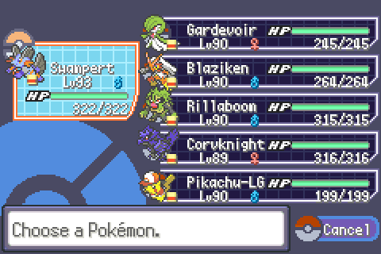
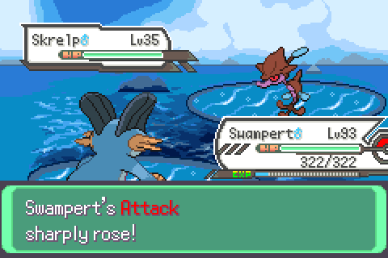

Start here
QoL features & controls
What the English + QoL patch adds on top of the hack, and which button does what. All of it works on existing saves.
Controls at a glance
| Where | Button | What happens |
|---|---|---|
| Overworld | R | Toggle auto-run on/off (sound cue plays) |
| Overworld | L | Offer to use a Repel (Max → Super → Repel) |
| Overworld | SELECT | Use the registered key item, or pick one of up to four |
| Bag | START | Sort the current pocket (type → name → amount) |
| Bag | SELECT | Move an item (unchanged from the hack) |
| Bag | ◀ ▶ | Switch pockets (the hack uses the D-pad, not L/R) |
| Wild battle, action menu | R tap | Throw the first ball in your Poké Balls pocket |
| Wild battle, action menu | R hold + ◀▶ | See the ball and count, pick another ball |
| Party menu | Moves option | Open the Move Relearner for that Pokémon, no Heart Scale |
Full English text
Roughly 6,000 strings that were still Chinese in the community translation are now English: the post-game and Lost Artifacts story (Volo and Arceus), the Sinnoh region, every Pokédex entry for all 960 species, item, ability and move descriptions, Battle Frontier text and trainer dialogue. About 50 strings stay Chinese on purpose (link-battle and Trainer Card messages whose control codes can hang the text engine, a few name-table entries with no context, and image-baked text such as the title art).

Bag sort
Press START in any bag pocket. Each press cycles the sort order: type (the game's internal item order) → name → amount. A message in the description box confirms the mode. The order is written to the bag itself, so it stays sorted after you close the menu.
Bag stack cap 999
Every pocket now holds up to 999 of an item (the hack allowed 99, except Berries). The quantity column shows three digits. The shop's buy picker still stops at 99 per purchase, so buy twice if you want more.

Register up to four key items
In the Key Items pocket, Register works on up to four items; every registered item shows the SEL marker. In the overworld, SELECT behaves as in vanilla when only one item is registered. With two or more, a popup lists them on ▲ ▶ ▼ ◀; press a direction to use that item, or B/SELECT to cancel. The hack's Mach Bike ↔ Acro Bike swap works on every slot.

Quick ball throw
In a wild single battle, at the Fight/Bag/Pokémon/Run menu:
- Tap R to throw the ball in slot 1 of your Poké Balls pocket without opening the bag.
- Hold R to see the ball name and count. While holding, ◀ ▶ rotates the pocket so a different ball becomes the default (this reorders the pocket, so it persists in the save). A long hold or a cycle releases without throwing.
- A ball icon with a red "R" badge at the bottom-left of the screen marks that the feature is available.
Disabled in trainer, Safari, double, link and Battle Frontier battles, when you have no balls, and when both party and PC are full.

Auto-run toggle
Press R in the overworld to toggle. When on, walking becomes running without holding B, and holding B walks instead. The setting is saved with your game. It respects the Running Shoes and any map where running is not allowed (buildings, some caves), exactly like vanilla.
L quick repel
Press L in the overworld. The game asks "Use the Max Repel?", falling back to Super Repel and then Repel depending on what you carry. It does nothing while a repel is already active or when you have none. When a repel wears off, the hack's own "use another?" prompt appears; that was already part of Hyper Emerald.


In-party move relearner
Open the party menu, pick a Pokémon, and choose Moves. The game's Move Relearner opens for that Pokémon with the hack's expanded move lists, and no Heart Scale is consumed. When you finish you return to the overworld rather than the party menu.

Coloured stat names
In every "rose" / "fell" battle message the stat name is coloured: Attack red, Defense orange, Speed light green, Sp. Atk pink, Sp. Def blue, Accuracy and Evasiveness yellow. The X-item message the hack shows inside the bag window is drawn by the hack's own routine and stays plain.

Things that were investigated and left out
- Bigger Items pocket / PC storage: the hack stores its own flag tables in the old bag area of the save, so growing the pocket would corrupt saves.
- Rare Candy shop: the hack's shop code only handles its own mart lists and soft-resets on any other purchase.
- OHKO as an in-game item: delivered as an emulator cheat instead (see Install & play).
- PC item sort: written but never verified in the emulator, so it is not in the release patch.